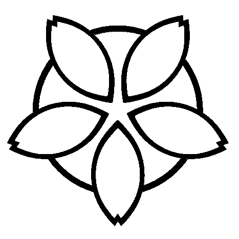

On the Subject of Koi-Koi
Wait... I thought this was about fish?
In order to defuse this module, the defuser has to win a 3-round game of the Japanese Hanafuda game Koi-Koi.
The defuser can either play against:
- Another defuser playing the module at the same time*
- Against a bot opponent by pressing the "Play against bot" button on the large display.
After the 3 rounds, the module of the winner will solve. The other player has to play a new game. In the case of a tie, both players will have to play a new game. Strikes will not be issued in any case.
*Online play is not available on Twitch Plays or when the game was started outside of Steam or for duplicate Koi-Koi modules. In either case the game will automatically start against a bot.
Module controls
- Click on the card in your hand / on the table to select it to take.
- To call Koi-Koi! or stop the round, press their respective buttons when you're given the choice (the lid on them will open).
-
On the display next to the cards the player has taken, 3 numbers will appear from top to bottom:
- The final score of the player (without the current round)
- The multiplier of the current round
- The sum of the base scores of the yakus formed by the player in the current round
- This display will also contain 2 buttons (◄ and ►). These will cycle which type of cards the player has taken to show. The symbol above them will symbolise the currently shown type. You can press these buttons on your opponent's display as well.
-
During the game, the large display next to the table will contain:
- A  symbol on the side of the player whoose turn it currently is. This marker will be orange, red and green during round 1, 2 and 3 respectively.
- The formed yakus and their base points of the current player if a new one was formed or a previous one was improved during their turn (while they choose to either call Koi-Koi or stop the game)
- When playing online, a "Leave game"
- On Twitch Plays, the ID of the module is shown on the card stack.